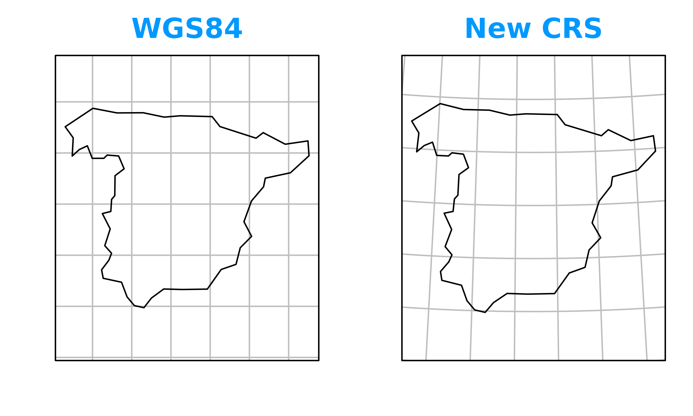
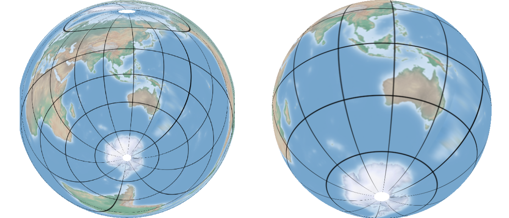

This is a package inspired by Projection Wizard, aiming to help automatically decide projective coordinate system based on R geospatial objects.
Regional map
The main purpose of projWiz is for manually specifying
regional map projection. There is a function called
proj_region(), along with simplified versions like
proj_equal_area(), proj_conformal(), and
proj_equidistant(), corresponding to the map projection
properties of preserving area, shape,
and distance. For some basic knowledge on these
properties, you can refer check map
projection wiki
quick_proj_region_map = function(proj_type) {
the_proj = proj_region(spData::us_states, property = proj_type)
spData::us_states |>
st_transform(the_proj) |>
ggplot()+
geom_sf()+
theme_bw()+
labs(title = proj_type)+
theme(plot.title = element_text(hjust = 0.5))
}
patchwork::wrap_plots(
list(quick_proj_region_map("Equalarea"),
quick_proj_region_map("Conformal"),
quick_proj_region_map("Equidistant"))
)
It’s hard to find any difference, right? Haha, that’s basically what I found when making this package – in not quite large scale, projections with similar optimized parameters have little difference.
As mentioned, proj_equal_area() is a pre-set parameter
version of proj_region(). For example:
proj_region(spData::hawaii,"Equalarea")
#> [1] "+proj=laea +lon_0=-157.6784675 +lat_0=20.5786295 +datum=WGS84 +units=m +no_defs"
proj_equal_area(spData::hawaii)
#> [1] "+proj=laea +lon_0=-157.6784675 +lat_0=20.5786295 +datum=WGS84 +units=m +no_defs"They will generate the same result.
If you run these codes on your computer, you will receive a message
indicating that “the region is quite small”, actually region with such
small areas using azimuthal projections would just have good
performance. You manually specify the projection with
proj_specify() function, using projections like Lambert
Azimuthal Equal Area(“laea”):
proj_specify(spData::hawaii, "laea")
#> [1] "+proj=laea +lon_0=-69767.246859 +lat_0=839846.2794754 +datum=WGS84 +units=m +no_defs"Note that the proj_specify() function is primarily
intended for regional data. For hemisphere or world data, you should use
proj_hemisphere() or proj_world() to specify
the projection.
Hemisphere map
For hemisphere maps, you can use proj_hemisphere() with
the central point’s longitude and latitude, or provide an object that
allows the function to calculate the centroid.
There are three main types of projections for hemisphere maps in
projWiz: “Equalarea” (which is Equal area), “Conformal” and
“Ortho” as showed below:
quick_hemisphere_map = function(proj_type) {
the_proj = proj_hemisphere(obj = list(x = 113, y = -37), property = proj_type)
rnaturalearth::countries110 |>
st_transform(the_proj) |>
ggplot()+
geom_sf()+
theme_bw()+
labs(title = proj_type)+
theme(plot.title = element_text(hjust = 0.5))
}
patchwork::wrap_plots(
list(quick_hemisphere_map("Equalarea"),
quick_hemisphere_map("Conformal"),
quick_hemisphere_map("Ortho"))
)
World map
For world map projections, the primary tasks are selecting a projection and setting the central longitude.
About projection selection, the projWiz package contains
popular world map projections stored in a list object called
world_proj_list. By utilizing the auto-complete feature in
RStudio or other mainstream IDEs (by typing $ after the
list name and pressing the Tab key), you can easily access
these projections.
The categories within world_proj_list are divided into
two: equal_area and compromise. If you’re
interested in projections with Conformal properties, you
could also check the compromise category. After selecting the category
using $ and Tab, you will see more detailed
projection properties to choose from. It’s advisable to have some basic
understanding of these projections, and you can refer to resources like
A Guide to
Selecting Map Projections for World and Hemisphere Maps.
Once you have made your selection, you can use
proj_world() to generate your desired world map.
central_longitude = -60
selected_world_proj_type = world_proj_list$compromise$round_boudnary$Natural_Earth
new_world_proj = proj_world(selected_world_proj_type, central_longitude)
rnaturalearth::countries110 |>
st_break_antimeridian(central_longitude) |>
st_transform(new_world_proj) |>
ggplot() +
geom_sf() +
geom_vline(xintercept = central_longitude)+
theme_minimal()
Message Explaination of proj_region()
When running the proj_region() or
proj_equal_area() or related functions, there will be some
messages on the console, which will tell you why the projection is
selected.
The messages typically include the following steps:
- “Longitude or latitude range exceeds limits”
- This error message appears if the longitude exceeds 160 degrees or the latitude exceeds 80 degrees.
- There is no strong reason for these limits; they were set to avoid
projecting maps of areas larger than a hemisphere, which may lead to
errors. Additionally, projecting regions over such a wide range would be
abnormal; if you insist doing so, you could use
proj_hemisphere(). - The reason for not using 180 degree and 90 degree is just to leave some space and reduce the risk of errors.
- “The map extent is not/too quite large”
- If the longest edge of the extent is less than 1000 km, the function will always select an azimuthal projection.
- If the longest edge exceeds 1000 km, the function will proceed to the following checks.
- “North-south extent,” “East-west extent,” and “Square-shaped extent”
- “North-south extent” often results in cylindrical projections, such as the Mercator.
- “East-west extent” generally leads to conic projections.
- “Square-shaped extent” usually results in azimuthal projections.
- “Close to poles,” “Close to equator,” and “Mid-latitude away from
pole and equator”
- If the region is near the equator or poles, the central latitude is set to the equator or the poles. This approach helps orient the reader to these reference points in large extent maps.
- For conformal projections, some time you may see the zone number
recommendation of UTM or Gauss-Kruger
projection, you could look it in websites like epsg.io with the parameter in the message.
- If you just want to check the zone number of you area of interest,
you could use functions like
check_utm_zone(),check_gauss_kruger_3_deg()orcheck_gauss_kruger_6_deg()
- If you just want to check the zone number of you area of interest,
you could use functions like